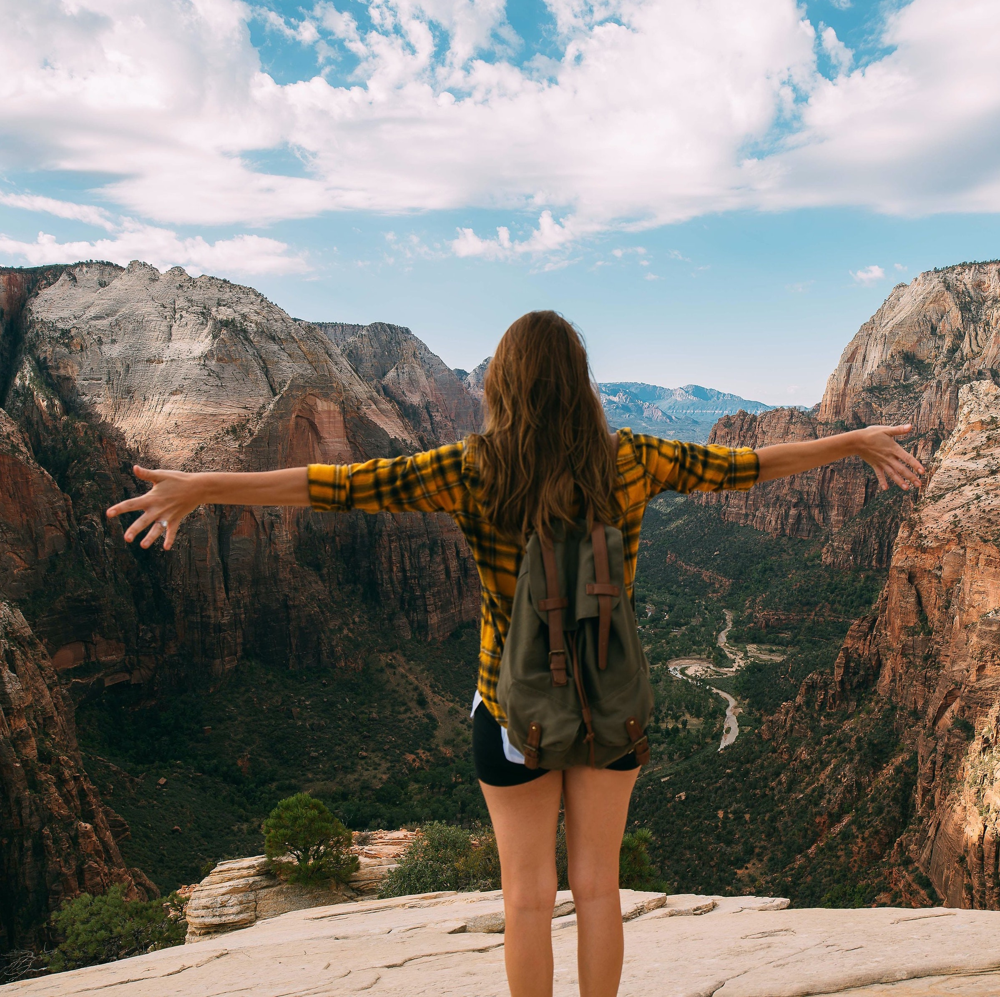

Internet, praskání ohně a vrzající schody. Nic víc nepotřebuješ.
Spojili jsme výhody práce na dálku, lásku k přiměřené nadmořské výšce a vzníkl Kohůt. Komunitní horská chata, kde budeš jako doma. Si piš!
Inspirativní coworkeři
Maximální soustředění

Nevšední zážitky ve všední dny
Kdo je Kohůt?
Kohůt jsou lidi, komunita a brzo i ty, to je důležitý.
Ale vážně. Jsme komunitní coworking. Né takovej ten anonymní, kde přijedeš, trapně pozdravíš někoho v kuchyňce a rychle se vytratíš. Takový, kde poznáš nové přátelé, pohneš s projektem, ale co nejvíc - po práci zábava v horách. A budeš se chtít vracet.
Při zakládání Kohůta jsme se inspirovali v zahraničí sdíleným bydlením, kdy dnešní generace milénialů často volí radějí komunitní bydlení, než hypotéku a zapuštění kořenů. Avšak tak daleko nejdeme.
V praxi jsme spojili komunitní bydlení s prací na dálku a vznikl Kohůt - místo kam přijedeš párkrát za rok, nejenom proto, že pracovat z hor je zajísté poetičtější než z Prahy, ale protože už nejedeš někam do neznáma, ale za kámošema na horskou chatu.
Co také můžeš dělat (ale nemusíš)
- objevovat Krkonoše na kole
- šlapat ty nejstrmější kopce v ČR
- čepovat pivo, když narazíme - za odměnu!
- venčit oddílového psa, Žeryka
- pokoušet se pouštět letajícího draka a poté to vzdát
- pomoci se stavbou sauny
- nechat se zavalit lavinou
- štípat dříví
- namakat si lýtka na běžkách
- vyzkoušet si výlat se sněžnicem
- vylepšovat náš domeček
- štrikovat ponožky a obdarovat toho štipajícího dříví
Pár mouder Rady starších
- Pracujem - očekáváme, že budeš dodržovat alespoň zkrácený pracovní režim. To je minimálně těch 5 hodin denně. Kdyby tomu tak nebylo, válíš si šunky a pracovní morálka ostatních by upadala. A ještě by ses nudil.
- Pomáhame - nejsme hotel. Zaměstnance, v právém slovasmyslu, tu nehledej. Díky tomu máme ty přátelské ceny. Ale něco za něco. Můsíme si pomáhat. Kohuťák se snaží, aby vše fungovalo tak jak má, ideálně bez vyzvání. Správce chaty má vždycky pravdu.
- Odvážnému štěstí přeje - bojíš se příjet sám? Neboj, všichni na tom budou stejně. Běžně nepřijímame skupinky* kolegů či kamarádů. Proč? Přispívají drolení kolektivu.
- Všeho s Mírou - snažíme se najít střed mezi zábavou a klidem skrze jedno doporučení. A to na 2 pracovní dny, 1 akční. Moc? Málo? Pravidla jsou od toho aby se porušovali. Něco jiného je ale víkend - vyrážíme do hor, na kola, na snowboard, prostě nějaká akce.
- Hakuna matata! No Problem! Kohůt je místo, kde jedeš pracovat, ale budeš se citít jako na dovolené. Na dovolené se lenoší, běhá, možná skáče, ale rozhodně si ji nekazíme maličkostmi.
* pro skupinky se prosím ozvi a něco vymyslíme.
Ceník
Zakládáme si na dostupných cenách. Jen díky tomu se zde vždy sejde rozmanitá skupina lidí různých zájmů a profesí. Zároveň si nehrajeme na hotel - najdeš tu vše, co potřebuješ (postel, koupelnu, teplo, internet, stůl, židli, kávu, čaj), ale o chod domácnosti se staráme všichni. Prosím, toto není místo pro nepracovní dovolenou**.
- Zkušební týden* ..................... 550 Kč za noc : 3850 Kč za 7 nocí
Užil sis Zkušební týden a rád bys přijel zase? Odteď můžeš být členem. Členové mají plno výhod, jako jsou bezplatné víkendovky, možnost podílet se na chodu a smluvní ceny ubytovní.
- Sezonní návštěva (10 až 17 nocí..................... 500 Kč na noc
- Stěhuju se na hory (18 nocí a více)..................... dle domluvy
* Minimální doba pobytu je 1 týden. První návštěva je zpravidla týden, abychom se poznali.
** nepracování znamená porušení pravidel a může znamenat přečasné ukončení pobytu, ber to jako tvrdý socialismus, přiživníci budou přívázání k špalku a budou štípat dříví!
Časté otázky
Proč tak řešíte pracovní řežím? Proč prostě nemužu přijet na dovolenou a párkrát za týden kouknout na email?
- Důvodů je několik. Prvním je cíl vytvotřit místo, kde spolubydlící mužou žít dlouhodobě. To znamená udržet běžný, pohodový pracovní režim. A takový režim znamená přibližně 5 až 10 hodin práce denně, podle projektu a aktuálních potřeb. Však to znáš. Člověk nepracujicí by se v takovém okolí nudil a skotačil, což je sice super, proto tu jsme, ale zároveň by rušil ostatní v práci a produktivita by nebyla valná. Druhým je ochrana Kohůtu proti víkendovým dovolenkářům. Nechceme aby někdo přijel v pátek, měl levné ubytování a v neděli večer narychlo odjede. Proto je minimální doba pobytu týden. Chceme budovat komunitu, nechceme sloužit jako levný penzion.
Co je to zkušební týden? Nemůžů prostě přijet na měsíc? A nebo na 3 dny či prodloužený víkend?
- Zkušební týden je tu proto, abychom si na sebe zvykli, uvedli tě do kolektivu a ty sis zvykl na nové prostředí. Zároveň je to pojistka, kdyby se ti u nás nelibilo (nebo naopak). Týden je doba, po které si už můžeš udělat nějaký názor. Po zkušebním týdnu tě už nic nelimituje, mužeš přijet znovu. Na týden, na dva, či déle. Podle tebe samotného. Staneš se naším členem.
Rád bych se nastěhoval dlouhodobě, je to možné? Kolik to bude stát a jaké jsou podmínky?
- Super, takové lidi právě hledáme. Možné to rozhodně je, ale musíme se domluvit jak to konkrétně vymyslíme. Všechno je ve hvězdách. Jedna z důležitých otázek by určitě byla zda by ses nechtěl stát "Správcem Kohůtu" - to přináší samozřejmě benefity. Ale i mnohem víc zodpovědnosti.
Říkáte že jste komunita? Můžu se nějak oficiálně přidat? Můžů nějak pomoct projektu?
- Ano, snažíme se aby jsme zvládali co nejvíce práce a rozvoje s pomocí našich členů. Myslíme si totiž, že i manuální práce na chalupě je příjemná, pokud je ve společnosti fajn přátel, za rohem se chladí bečka piva a oheň praská. Určitě plánujeme i víkendové brigády - přijedeš na čersvý vzduch, pomůžeš nám s projektem, a za odměnu se o tebe postaráme.